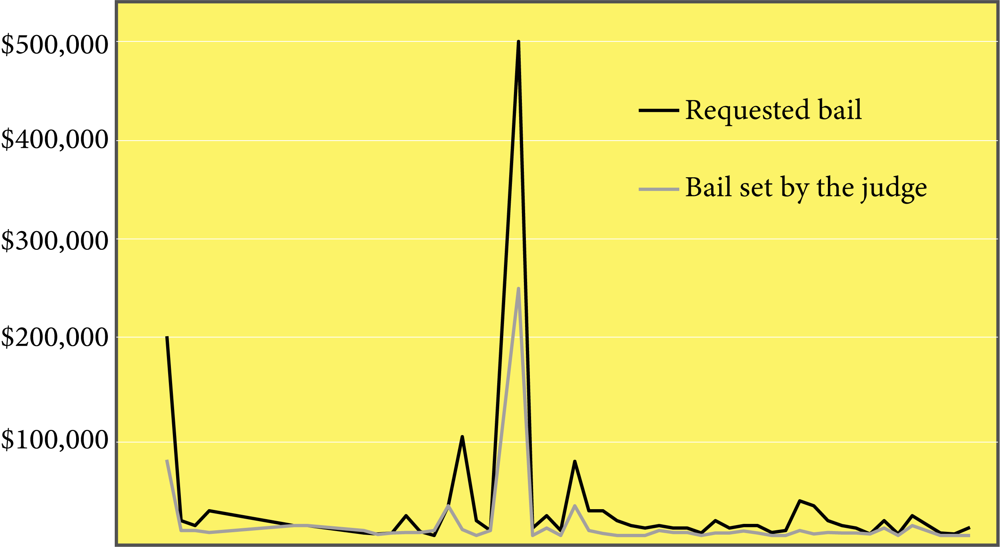
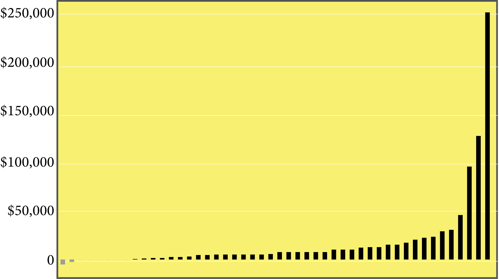
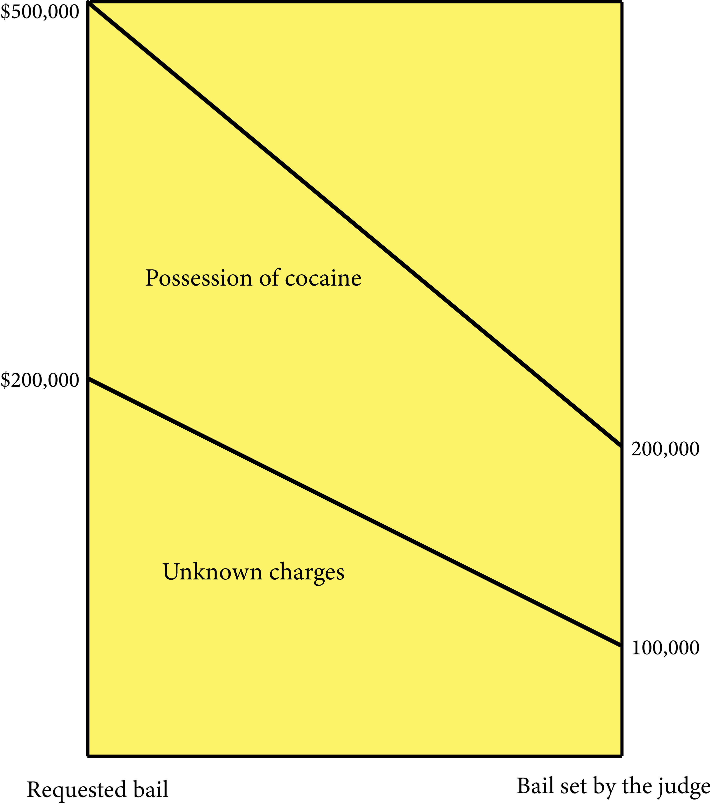
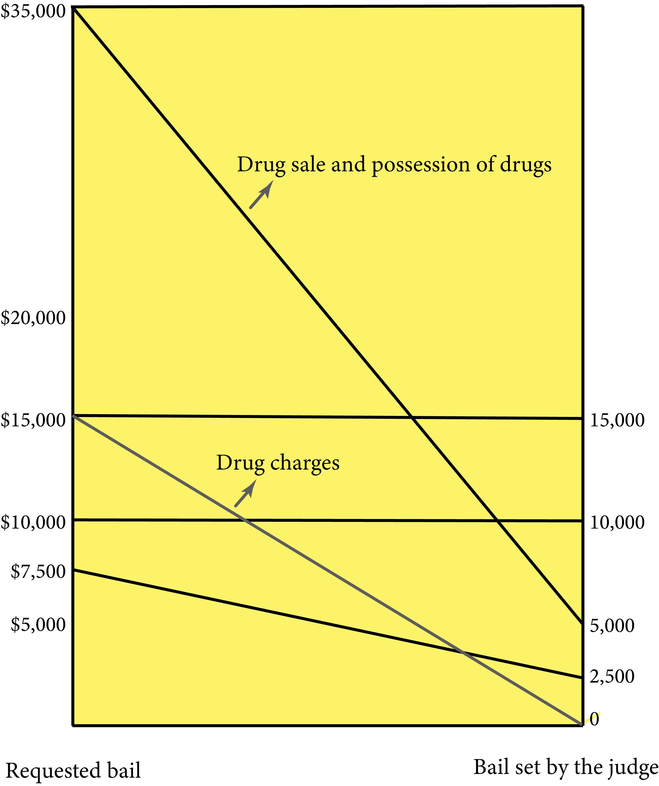

Arraignments under the microscope
BY DIANA BAPTISTA
Published August 05, 2018
It’s Meave Gallagher’s and Matthew Kasparian’s first day at the Kings County Court in Brooklyn. They’re sitting at the fourth row in Part AR3, notebooks at hand, rapidly filling out forms about an arraignment of a hispanic man accused of punching his partner in front of their child. They’re surrounded by court officers constantly exiting the room and by attorneys chatting amongst themselves. In the courtroom with its high, white ceilings, the noise makes it hard for them to listen what the judge is saying to the defendant.
The married couple works in journalism -she writes for a health magazine and he analyzes data-. They didn’t study law and, until a couple weeks ago, had never witnessed an arraignment in court. On July 15th, along over 60 volunteers, they were trained by Court Watch NYC to observe the arraignments, in which the judge formally reads the charges against the defendant and, if considered necessary, sets a bail that might change the person’s life.
“We wanted something good to do together. I have free time and this seemed really important, because it’s a giant system that affects all the people,” she said.
Court Watch NYC is putting together an army of volunteers to keep an eye on Brooklyn DA Eric Gonzalez and Manhattan DA Cy Vance promise to no longer request bail in most misdemeanor and violation cases. This means that DA’s have an option not to prosecute such cases and judges have the directive not to set bail on them.
Decreasing bails on misdemeanors
Although the organizations’ collected data still isn’t enough to draw definite conclusions, certain trends are noticeable. First of them is that, from 58 observed arraignments, the prosecutors requested an average bail of $28,173. Some spikes were noticed in relation to drug charges, a shooting and other unknown charges.
Requested vs. set bails
NOTE: The x-axis represents the 58 arraignments observed by volunteers.
SOURCE: https://www.courtwatchnyc.org/. Updated on July 30, 2018.
Difference in dollars between requested and set bail
NOTE: The x-axis represents the 58 arraignments observed by volunteers.
SOURCE: https://www.courtwatchnyc.org/. Updated on July 30, 2018.
The bail is usually decreased by the judge to an average of $11,342, a difference of 59%. In 13 cases, the judge released the person by their own recognition, meaning that no bail was set, the accused was free to go and has to return to court on a settled date.
On journals written by the watchers and published in the organization’s website, they point out that bails are usually set in arbitrary ways, even when it should only be set if the defendant represents a flight risk.
In the journals, they also take notice that 90% of the defendants were male, 75% were either black or latin and one third were under 25 years old. In contrast, 90% of the public defenders and the prosecution were white.
The two highest bails requested by the prosecution
NOTE: Charges as indicated by the volunteers.
SOURCE: https://www.courtwatchnyc.org/. Updated on July 30, 2018.
Are they still prosecuting weed smokers?
A report published on July 27th by Brooklyn DA’s Office asserts that the prosecution of low-level marijuana offenses plummeted by over 90% between January and June of 2018. During that period of time, there were 2,176 low-level drug arrests, of which 863 the prosecution was declined.
Although Mayor Bill de Blasio directed the NYPD to stop arresting people for smoking marijuana, the directive will be implemented starting on September 1st.
To keep an eye on the prosecution of such crimes, Court Watch NYC created a special “drug initiative” in which volunteers will identify if the defendant was charged with possessing only a residue of a controlled substance or with carrying syringes, pipes or empty bags.
According to the journals, the watchers have witnessed only nine arraignments involving drug charges, of which only two were released without bail. The volunteers are getting extra training to increase their vigilance on drug charges starting September.
Bails for possession or sale of drugs
NOTE: Charges as indicated by the volunteers.
SOURCE: https://www.courtwatchnyc.org/. Updated on July 30, 2018.
A look into injustice
On their journals, volunteers offer a personal reflection about the ambiance at court and the events that they witness. They often use words like “poverty” and “homeless” to refer to the vulnerability of the accused and the damage a bail might have on its life. They describe the process as “difficult” and requiring too much “waiting”.
The volunteers persistently address that the defendants seem “confused” or “stressed” by the arraignments that, according to Court Watch NYC, happen in an average of five minutes. While sitting through her first eight arraignments, which went by in under an hour, book editor Nora Rawn notices that the defendants don’t have enough time to process what the judge is saying to them.
“I wish we were able to speak to the accused in a better way. This feels like a failing of the system,” she reflected.
In the experience of Julie Mente, a 39-year-old grad student in Public Administration, a lot of cases are “poverty crimes”, like shoplifting food or making a bad use of a metrocard. Such misdemeanors define a person’s life during arraignment between 2 and 20 minutes long, she pointed out.
“I think it was really eye opening to me how fast they go by and how significant the decisions are for the people in the courtroom. You can’t go back to where you live, or pay the bail. You can lose your house or your job, the stakes are really high,” she said.
Negative words to describe arraignments
The frequency of negative words used by volunteers to describe the ambiance at court or the vulnerability of the defendant.
SOURCE: https://www.courtwatchnyc.org/. Updated on July 30, 2018.
They also point out the permanent noise within the courtroom, where court officers are playing games in their cellphones, or attorneys are talking and making jokes. The families of the defendants, they say, usually get yelled at for doing something that violates the court orders, like taking out their cellphones.
“It’s the usual, ordinary, common everyday practices in the courtroom that are outrageous and unacceptable. The truth is that we are observing is far from exceptional,” wrote one of the volunteers in the journals.
Calls for change
For the volunteers, attending arraignments is a harsh introduction to the justice system in the country. A system, they agree, that must be changed by arresting less people, finding new methods to defuse a conflict, addressing the underlying issues of crime and ending money bail.
“When the people we see passing through are there for possession of drugs or for stealing essential groceries, it’s obvious to most people that they don’t belong in the criminal justice system at all. We should be pushing for decarceration at the front end and a radically different system of addressing social problems,” said Eva Petkanas, 26-year-old student of Brooklyn Law School.
For Meave and Matthew, the married couple that sat during three hours on Monday’s night to watch arraignments, accountability and keeping tabs on public officers promises are also some of the best ways to bring about the desired change.